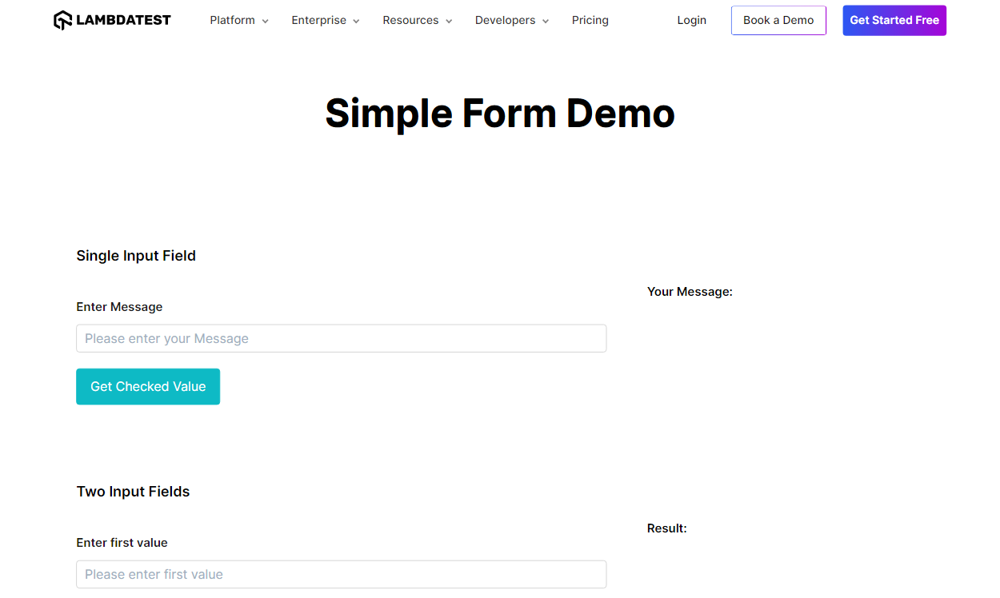

SeleniumBase Visual Comparison
Baseline Screenshot
Visual Diff Failure Screenshot

Last updated:
Monday, 25 September 2023 at 11:25:06 PM (Horário de Verão de Greenwich , UTC+01:00)
Generated by:
SeleniumBase